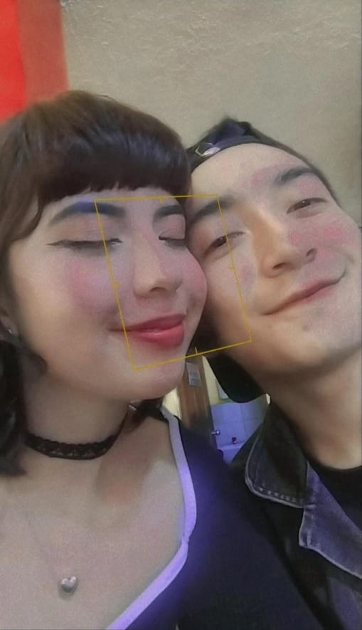
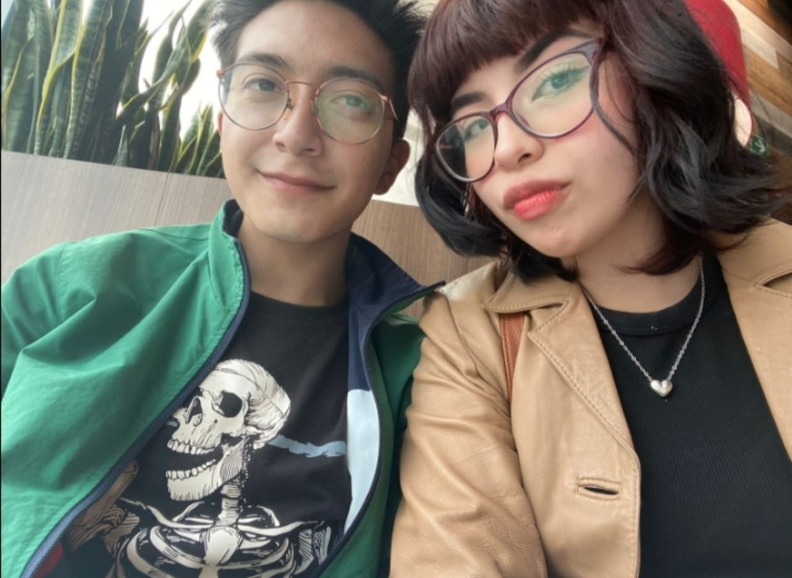
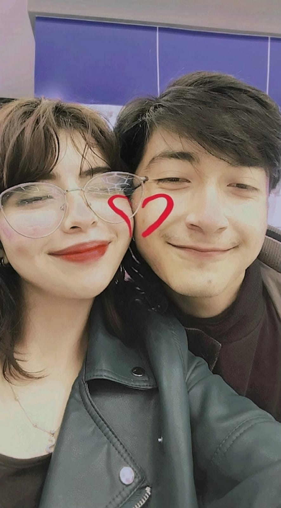
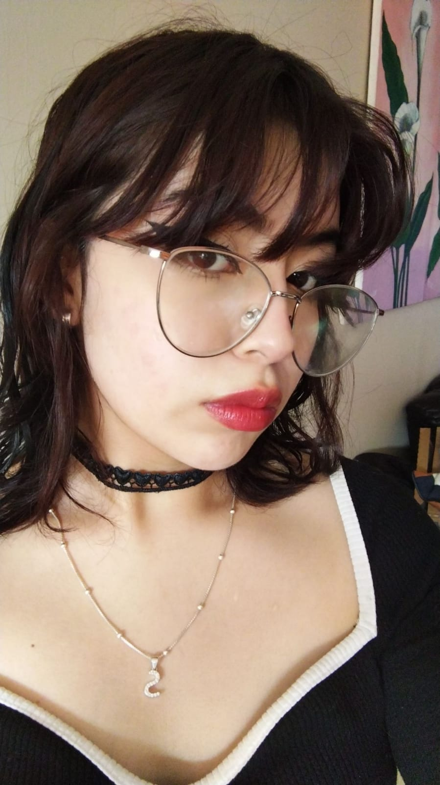
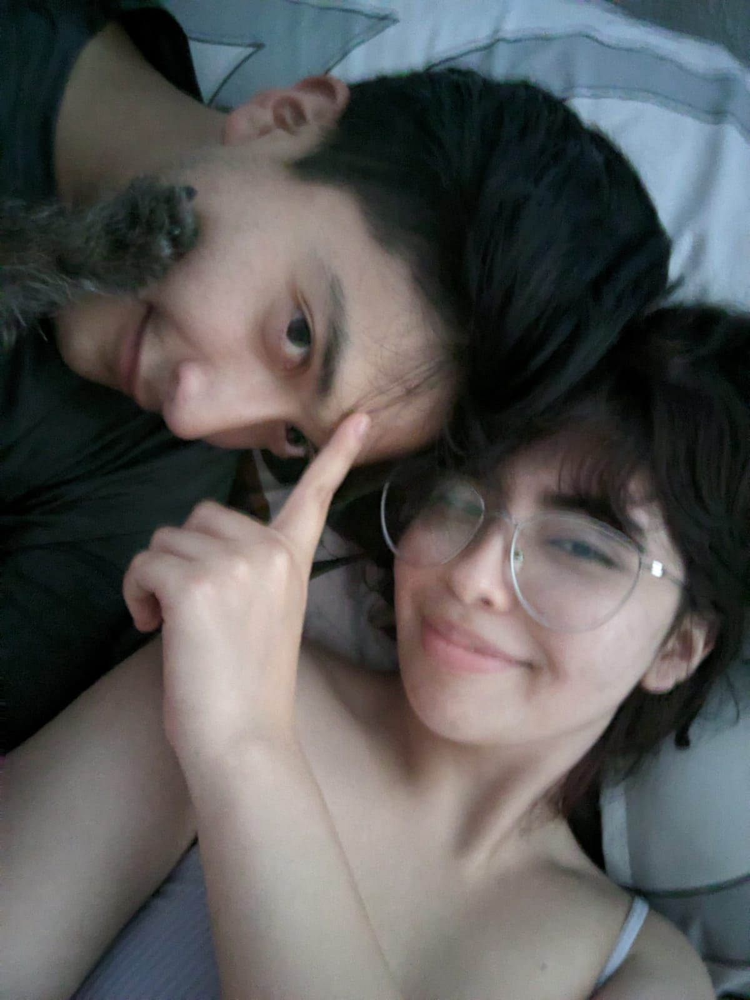
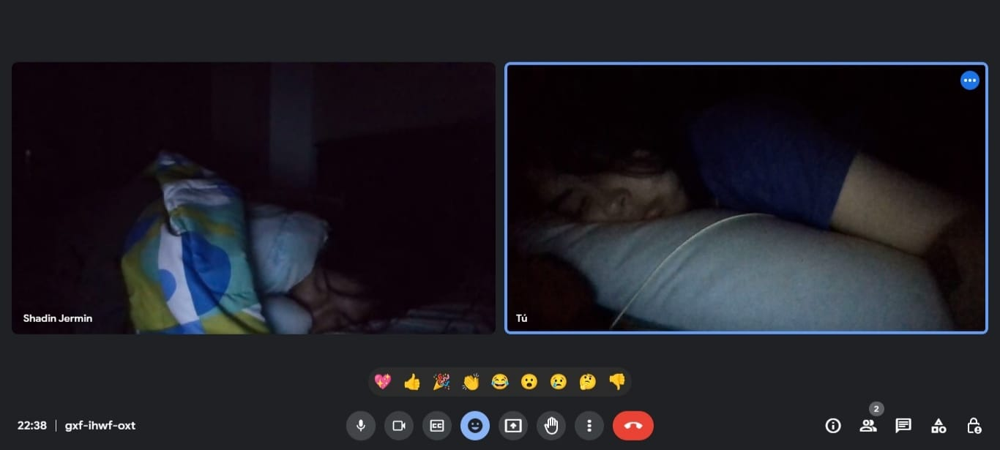
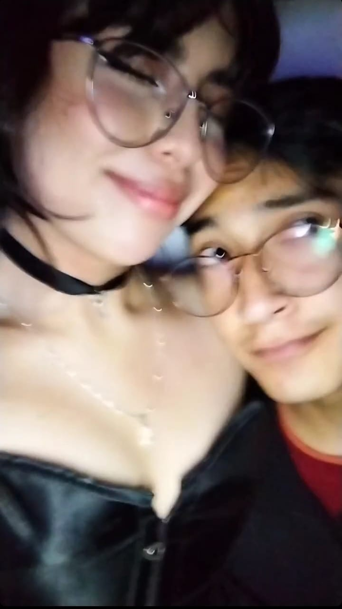
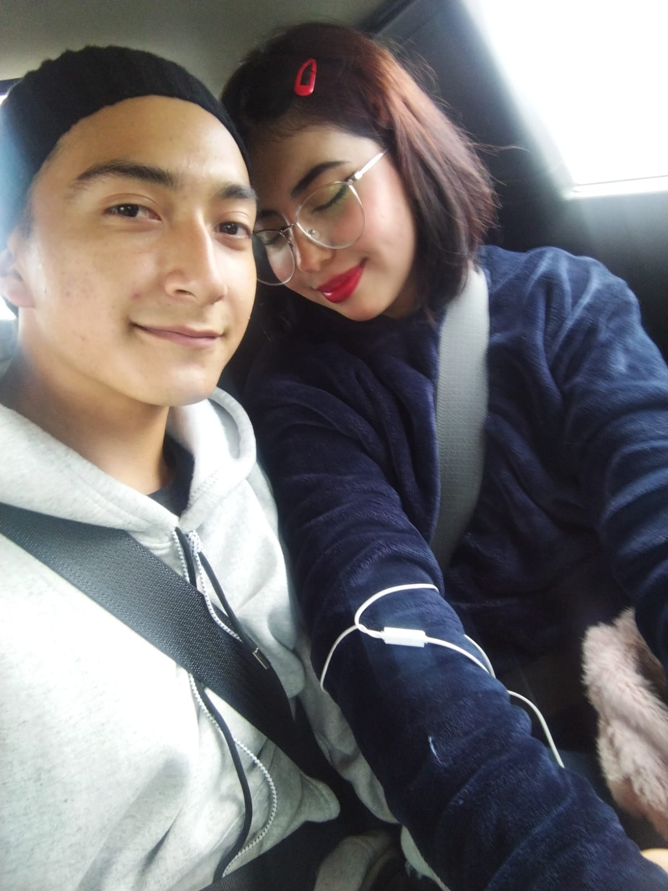
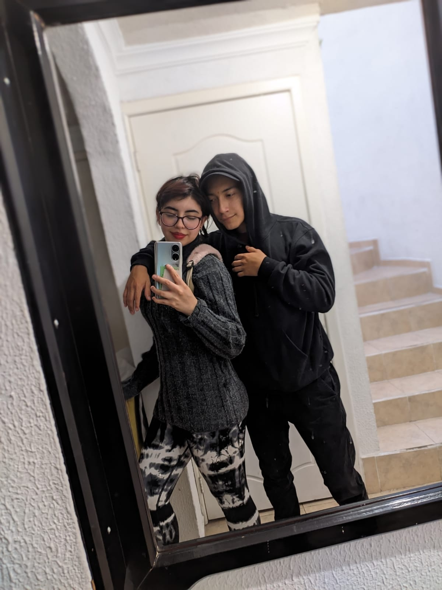
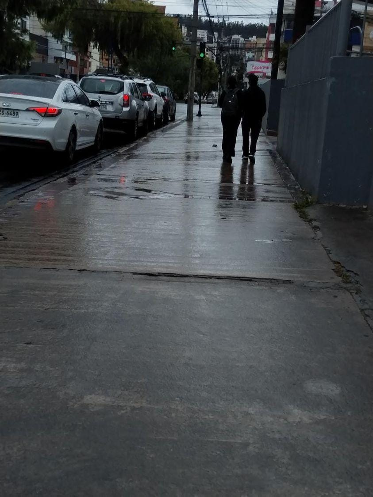

Hola Sammy,
Espero que estés teniendo un gran día, tarde o noche. Quería tomar un momento para expresar lo que siento por ti en este espacio. Antes de empezar, quiero decirte que esto es algo nuevo para mí, ya que nunca he sido muy bueno para expresar mis sentimientos de esta manera. Pero, sinceramente, no puedo contener más lo que siento.
Desde el primer momento, algo cambió en mí. Tu sonrisa ilumina mi día y tu presencia llena de alegría cualquier lugar en el que estés. Me cautivas con tu forma de ser auténtica y genuina. Tu sentido del humor me hace reír como nadie más, y siempre encuentro confort en tu compañía.
No puedo dejar de admirar tu increíble inteligencia y cómo siempre te destacas en todo lo que haces. Eres fuerte, valiente y siempre sigues tus pasiones sin importar lo que los demás piensen. Me encanta cómo te enfrentas a los desafíos con determinación y cómo siempre buscas ser la mejor versión de ti misma.
También quiero decirte que admiro la forma en que tratas a los demás. Eres amable, considerada y siempre estás dispuesta a ayudar a quienes te rodean. Tu corazón bondadoso es algo que me hace sentir afortunado de conocerte.
En resumen, me enamoré de ti por muchas razones. Tu personalidad, tu sonrisa, tu inteligencia, tu fuerza y tu bondad son solo algunas de las cualidades que me hacen sentir atraído hacia ti. No puedo evitar pensar en ti en cada momento del día y desearía decírtelo en persona todo el tiempo.
En fin, solo quería que supieras lo especial que eres para mí y lo mucho que significas en mi vida.
Con todo mi cariño

Bueno para plasmar lo que siento por ti decidí hacer este experimento de blog para ayudarme en mis habilidades en mecanografía, desarrollo de ideas y prácticas en código, pero mas que nada para hacerte un detalle no sé si será cursi o algo por el estilo solo tienes que saber que a continuación tienes 10 diferentes
poemas que escribí con las 5 razones por las cuales me fascinas en las áreas personales, físicas y emocionales. Tengo que aclarar que hay muchas mas razones pero las iré implementando no se si cuando te las presente habrán solo 10 o ya pondré más, también espero poner una sección donde estén las cartas que te escribí hasta el momento. Sin mas eso es todo como introducción.

Razón 1:
Tu Sonrisa
Tu sonrisa ilumina mi día y me llena de alegría. Es contagiosa y siempre me hace sentir bien. No hay nada que me haga más feliz que ver esa hermosa sonrisa en tu rostro.

Razón 2:
Tu Inteligencia
Eres increíblemente inteligente y siempre me sorprendes con tu perspicacia y conocimiento. Me encanta tener conversaciones contigo y aprender de tus ideas y opiniones.

Razón 3:
Tu Apoyo
Siempre estás ahí para apoyarme en todo momento. Tú me animas y me motivas a seguir adelante, incluso cuando las cosas se ponen difíciles. Tu apoyo incondicional significa el mundo para mí.

Razón 4:
Sentido del humor
Tu sentido del humor es simplemente maravilloso. Me haces reír con tus ocurrencias y chistes. Siempre logras alegrar mis días y hacer que todo sea más divertido.

Razón 5:
Tu amor incondicional
Tu amor por mí es genuino y sin reservas. Me haces sentir amado y valorado en todo momento. No puedo imaginar mi vida sin ti y estoy agradecido de tenerte a mi lado.

Razón 6
Personalidad
Mi chica que con solo una mirada puede decir todo lo que necesita. Ella tiene un don en la comunicación corporal, el lenguaje visual. Es como si pudiera leer las mentes de las personas solo al observar sus gestos y movimientos, y luego traducirlos en un lenguaje visual que aun estoy aprendiendo a entender siempre tengo algo nuevo que aprender con mi chica. Su personalidad cómica es contagiosa y siempre me logra sacar una sonrisa.
Mi Sammy y su capacidad de cuidarme protegerme me siento seguro en sus brazos en su cariño en su forma de amar es una gran hija, una maravillosa hermana, una espectacular amiga y una grandiosa pareja.
Pero lo que realmente la hace destacar es su habilidad en el arte de dibujar ojos. Cada vez que veo uno de sus dibujos, siento como si pudiera mirar a través del papel y ver directamente en la mirada del personaje. Es como si cada uno de sus dibujos tuviera una historia detrás, una historia que solo ella puede contar y quiero escuchar cada historia directamente de sus palabras.
Es increíble cómo una sola persona puede tener tantos talentos diferentes. Pero lo más admirable de ella es que siempre se mantiene fiel a sí misma, nunca deja que el éxito o los elogios la cambien. Siempre es humilde y agradecida por todo lo que tiene, y eso es lo que realmente la hace especial.
Razón 7
Estilo y gustos musicales
Hay una chica, mi chica que es una combinación perfecta de belleza y cerebro, una chica que ama la buena música y el maquillaje. Ella es inteligente y siempre está en busca de nuevos conocimientos, pero también tiene un sentido del estilo único que refleja su amor por el rock, pop y derivados de la buena música.
Cada vez que habla de su pasión por la música me habla y muestra sus canciones y álbumes favoritos de donde eh sacado canciones que ahora me gustan, sus ojos brillan con emoción y su voz se llena de entusiasmo cuando me enseña su mundo audiovisual y musical. Es como si pudiera sentir la música a través de cada fibra de su ser. Y cuando habla de maquillaje y labiales, su pasión por el arte de la belleza se hace evidente.
Pero lo que realmente me hace admirarla es su capacidad para combinar ambos mundos. Cuando tuve la oportunidad de ir a un concierto con mi chica la admire luciendo un maquillaje impresionante con labios atrevidos y brillantes, y su mente siempre está analizando cada nota y cada acorde simplemente épico una de las mejores noches de mi vida y la pase gracias a mi chica.
Es difícil encontrar a alguien tan talentoso y apasionado en tantas áreas diferentes. Pero lo que realmente la hace especial es que siempre es fiel a sí misma, nunca cambia su estilo o sus intereses solo para encajar con la multitud. Es una chica única y auténtica, y eso es lo que la hace tan hermosa tanto por dentro como por fuera.

Razón 8
Cratividad y el Arte Culinario
Es impresionante ver cómo ella se mueve con tanta facilidad en la cocina, manejando cuchillos, ollas y sartenes como si fuera una chef profesional. Pero lo que más me gusta de ella es su creatividad y su pasión por experimentar con nuevos sabores y técnicas de cocina. Nunca deja de sorprenderme con sus platos innovadores y su destreza en la decoración de postres.
Además, su personalidad es encantadora. Es tan dulce, amable y divertida, que me hace sentir muy cómodo y feliz en su compañía. Me gusta la forma en que me escucha atentamente cuando hablo de mi amor por la comida, y cómo se emociona cuando comparto mis ideas sobre nuevas recetas y sabores.
Pero debo confesar que un 14 de octubre, aunque estábamos muy cerca, aún no me he atrevía a confesar mis sentimientos hacia ella. No sabía si ella siente lo mismo por mí, pero tuve la valentía de expresarle mis sentimientos en algún momento de esa tarde noche.
En resumen, estoy enamorado de esta chica por muchas razones: su pasión por la comida, su creatividad, su personalidad y su belleza interior y exterior. Espero algún día poder cocinar junto a ella, experimentar con nuevos sabores y crear momentos memorables juntos

Razón 9
Ley de atracción
Mi chica la más hermosa, mi chica que siempre llama mi atención con su belleza física. Sus ojos grandes y brillantes son tan cautivadores que es difícil dejar de mirarlos. Su piel suave y radiante hace que quiera acariciarla, y su cabello tan brillante, ondulado y sedoso es como una cascada de seda que enmarca su rostro perfectamente.
Pero lo que más me gusta de mi chica es la confianza que irradia. Es una mujer segura de sí misma y su cuerpo, lo cual es muy atractivo para mí. No se preocupa por lo que otros piensen de ella y vive su vida de acuerdo con sus propios términos.
Sin embargo, también es una persona con una personalidad encantadora. Es inteligente, divertida y amable, lo cual la hace aún más hermosa. Es una conversadora nata, siempre tiene algo interesante que decir y me encanta escucharla.
Pero, aunque su belleza física es impresionante, es su personalidad la que me atrae hacia ella. Me encanta estar cerca de ella porque su presencia me hace sentir bien, como si todo estuviera bien en el mundo. Es una chica hermosa tanto por dentro como por fuera, y eso es lo que realmente importa para mí.

Razón 10
Actitud de Gratitud
Buenos días preciosa lo primero que quiero decir es gracias, gracias por las risas, por las carcajadas, por la paz, por la calma, por la compresión, por la atención, por la transparencia. Es lindo que alguien tan increible como tu me de tanta importancia.
Segundo quiero decirte perdón, tengo la idea que es importante también perdonlos los malos entendidos, por los cambios de humor, por los cambios de planes, por la distancia, por lo arrogante, por lo distraído, por que hablo sin pensar a veces. Trabajo en ello.
Tercero quiero decirte te amo, amo tu amor, amo tu rostro, amo tu piel, amo tu descendencia y tu ascendencia, amo quien eres, amo quien fuiste para ser quien eres, amo quien quieres ser, amo amarre, amo 5 meses, amo el tiempo, amo el viento que sale de tus fosas nasales, amo el retumbar de tus caderas cuando chocan conmigo como quien de una cascada habláramos. Amo el amor y amo que ssa tu amor.
Hay muchas cosas que quiero ver, sentir, escuchar, amar, todas se tratan de ti quiero contigo, quiero por ti. No sabía que escribir. Pero ayer me di cuenta que no importa la redundancia lo que importa es que lo haga. Y expresar es un mundo que me encantó conocer contigo y quiero seguir explorando. Ya no me importa solo quiero escribirte y decirte lo mismo pero es necesario como cuando me urge decirte lo hermosa que eres lo precioso de tus ojos lo mucho que te amo.
Se suponía que iba a pasar a escrito pero me mimi.
Te amo mi chica, mi corazón, mi Sammy, mi Sam, mi amor.
Estoy para ti ❤️
Con amor y con nudos en la garganta.
Yo tu Jermin Shadin ❤️
